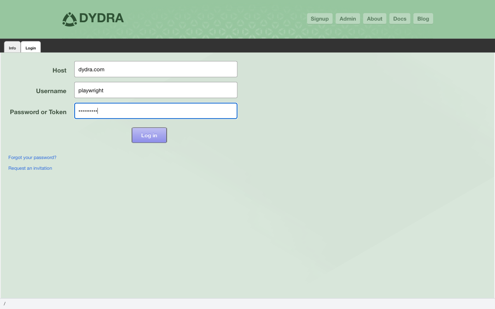

1.1 Walking Through the Door
The first thing this application will ask of you is a simple question: who are you? It is a fair question. A system that holds your data ought to know who is asking for it.
Authentication is just the formal word for that exchange. You tell the system your name and offer your credential — your password, or your token — and the system decides whether to let you in. When it does, a session begins. Think of it as an open conversation between you and the server, one that lasts until you close the tab or choose to walk away.
1.2 Where to Begin
You start here:
https://dydra.com/ui/user
If you have not yet signed in, the application will show you a login form. If you have already signed in during this session, it will take you straight to your account. Either way, you will know where you stand.
1.3 Signing In
The login form asks you for three things. Here is how to fill it in:
https://dydra.com/ui/user.

Figure 1.1: The login form, ready to go.
- Host: The address of the server — usually
https://dydra.com - Login: Your username
- Password: Your password, or your API token if you prefer that route
1.4 Two Ways to Prove Who You Are
The system gives you two options when it comes to credentials:
1.4.1 Password Authentication
The familiar approach. You enter your username and your password, and the system checks them. This is the right choice for day-to-day use in a browser — straightforward and reliable.
1.4.2 Token Authentication
For situations where you are connecting programmatically — writing a script, calling an API, automating something — a token is the better choice. Tokens are long, unique strings that serve the same purpose as a password but are easier to manage in code. You can find yours in the account management section, which Chapter 2 will show you. To use one, enter it where the password field is.
The rule of thumb is simple: if a person is sitting at the keyboard, use a password. If a program is doing the work, use a token.
1.5 What the System Remembers
1.5.1 What Persists
When you sign in, the application makes a small note of your username in your browser's local storage. That means when you come back — tomorrow, or next week — your username will already be filled in, waiting for you. One less thing to type.
1.5.2 Signing Out
When you are done, signing out is easy:
- Find the Logout link in the navigation bar at the top
- Click it
- The application returns to the login view, ready for whoever comes next
- Your username stays in the field — a small convenience for your next visit
1.6 When Things Go Wrong
1.6.1 If the Login Fails
It happens to everyone. If the system turns you away, run through this short list before anything else:
- Check that Caps Lock is not on — passwords are case-sensitive
- Make sure the host field says the right address
- Confirm that you have a network connection
- Verify that your account exists and has been activated
1.6.2 Reading the Error Message
The system tries to be helpful when something goes wrong:
- "Invalid credentials" — your username or password does not match what the server has on file
- A network error — the browser could not reach the server at all
If you have tried everything and still cannot get through, write to support@dydra.com. Tell them what browser you are using and what the error message says.
1.7 Once You Are In
With authentication behind you, a whole system opens up. Here is where the rest of this manual picks up:
- Your account details and settings — Chapter 2
- Creating and managing repositories — Chapter 3
- Writing and running SPARQL queries — Chapter 4
- Reference material, when you need it — Appendices
Go ahead and turn the page. Chapter 2 is waiting.